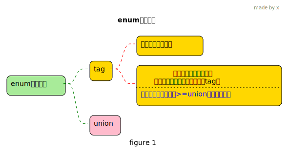
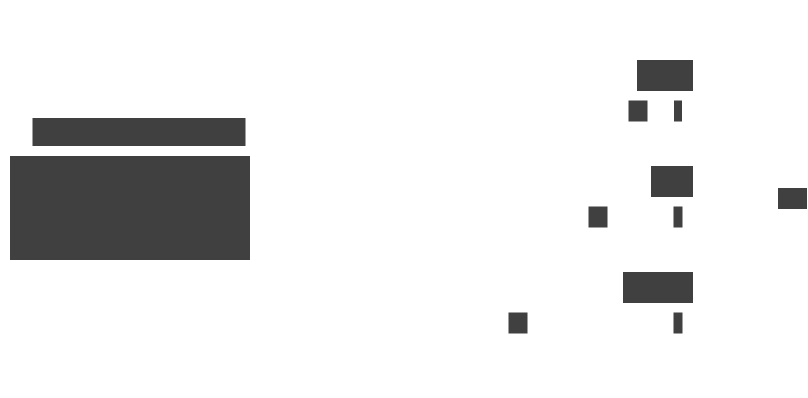
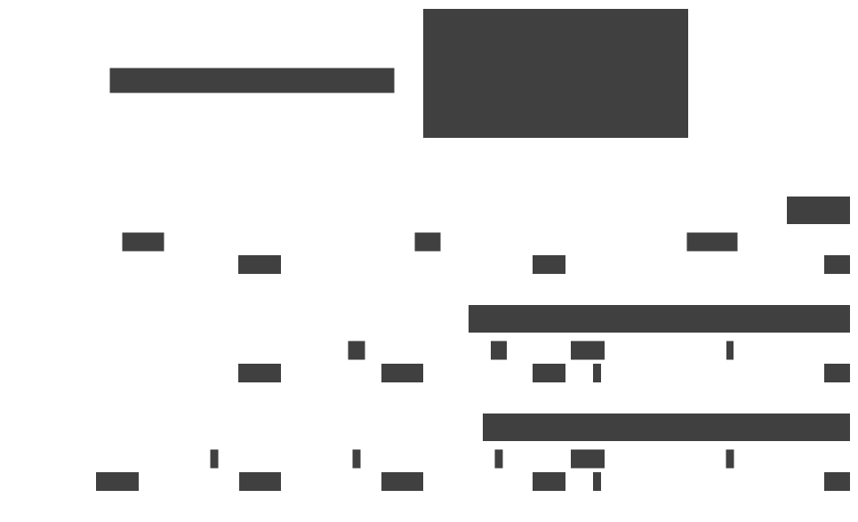

rust 枚举 enum
1 union
Important
- 看枚举之前,先看看union
- union是一种允许在相同的内存位置存储多种类型的数据结构
- 因此该类型大小等于内存占用最大的那个成员的内存大小
- union类型的主要功能是和c语言进行交互
union MyUnion {
j: i32,
i: i8,
}
fn main() {
// 00000001 00000100 <== 整个union 是这样的数据 4个字节
let mut my_union = MyUnion { j: 260 };
// 把它当作i32整型来使用, 需要 unsafe 块，因为这可能涉及内存重新解释
println!("j value: {}", unsafe { my_union.j });
// 我们直接打印 i 看看,发现 是260 低位的一个字节的值
println!("i value: {}", unsafe { my_union.i });
// 注意：在访问了union的一个字段后，访问其他字段之前,最好先进行“重置”或明确知道内存布局
// 否则可能会读取到无效的、未初始化的或者非预期的数据
my_union.i = 3;
println!("j value: {}", unsafe { my_union.j }); // 259
}2 枚举 enum
枚举是这样一种类型,允许你通过列举可能的成员(variants:变体)来定义一个类型
2.1 内存布局

例子1,运行看看, 然后取消注释b257再运行
enum Cat {
b1,
b2,
b3,
b4,
b5,
b6,
b7,
b8,
b9,
b10,
b11,
b12,
b13,
b14,
b15,
b16,
b17,
b18,
b19,
b20,
b21,
b22,
b23,
b24,
b25,
b26,
b27,
b28,
b29,
b30,
b31,
b32,
b33,
b34,
b35,
b36,
b37,
b38,
b39,
b40,
b41,
b42,
b43,
b44,
b45,
b46,
b47,
b48,
b49,
b50,
b51,
b52,
b53,
b54,
b55,
b56,
b57,
b58,
b59,
b60,
b61,
b62,
b63,
b64,
b65,
b66,
b67,
b68,
b69,
b70,
b71,
b72,
b73,
b74,
b75,
b76,
b77,
b78,
b79,
b80,
b81,
b82,
b83,
b84,
b85,
b86,
b87,
b88,
b89,
b90,
b91,
b92,
b93,
b94,
b95,
b96,
b97,
b98,
b99,
b100,
b101,
b102,
b103,
b104,
b105,
b106,
b107,
b108,
b109,
b110,
b111,
b112,
b113,
b114,
b115,
b116,
b117,
b118,
b119,
b120,
b121,
b122,
b123,
b124,
b125,
b126,
b127,
b128,
b129,
b130,
b131,
b132,
b133,
b134,
b135,
b136,
b137,
b138,
b139,
b140,
b141,
b142,
b143,
b144,
b145,
b146,
b147,
b148,
b149,
b150,
b151,
b152,
b153,
b154,
b155,
b156,
b157,
b158,
b159,
b160,
b161,
b162,
b163,
b164,
b165,
b166,
b167,
b168,
b169,
b170,
b171,
b172,
b173,
b174,
b175,
b176,
b177,
b178,
b179,
b180,
b181,
b182,
b183,
b184,
b185,
b186,
b187,
b188,
b189,
b190,
b191,
b192,
b193,
b194,
b195,
b196,
b197,
b198,
b199,
b200,
b201,
b202,
b203,
b204,
b205,
b206,
b207,
b208,
b209,
b210,
b211,
b212,
b213,
b214,
b215,
b216,
b217,
b218,
b219,
b220,
b221,
b222,
b223,
b224,
b225,
b226,
b227,
b228,
b229,
b230,
b231,
b232,
b233,
b234,
b235,
b236,
b237,
b238,
b239,
b240,
b241,
b242,
b243,
b244,
b245,
b246,
b247,
b248,
b249,
b250,
b251,
b252,
b253,
b254,
b255,
b256,
// b257,
}
fn main() {
let x = Cat::b1;
// 一个字节一共可以有256种可能,刚好可以保存上面任何一个变体,值就能区分
println!("{}", std::mem::size_of::<Cat>());
}
例子2
enum Cat {
Tiger(i32), //tag =0
Lion(i8), // tag =1
Dog(i16), // tag =2
}
use std::mem;
fn main() {
let lion = Cat::Lion(66);
println!("lion : {}", mem::size_of_val(&lion)); // 8
unsafe {
let d = &lion as *const Cat as *const u64;
//0x4201 --> 0x42=66 这个是data 0x01=1 这个是tag
//实际: 第一个字节存tag, 第二个字节存携带的数据 (因为这里Lion携带的数据是i8用一个字节就行了)
println!("0x{:x}", *d);
}
let dog = Cat::Dog(66);
println!("Dog : {}", mem::size_of_val(&dog)); // 8
unsafe {
let d = &dog as *const Cat as *const u64;
//0x420002 --> 0x42=66 这个是data 0x0002 这个是tag
//Dog 携带的数据是i16 是2个字节, 所以这里tag和携带的数据各占用两个字节
println!("0x{:x}", *d);
}
let tiger = Cat::Tiger(66);
println!("Tiger : {}", mem::size_of_val(&tiger)); // 8
unsafe {
let d = &tiger as *const Cat as *const u64;
//0x4200000000 --> 0x42=66 , 0x00 这个是tag
println!("0x{:x}", *d);
}
}

例子3: 我们来看看枚举中变体携带String的情况
enum Message {
Quit, // 不需要占用内存空间, 0
Move { x: i32, y: i32 }, // 8bytes
Write(String), // 24
ChangeColor(i32, i32, i32), // 12
// Read(String),
}
struct enumStringStruct {
a: u64,
b: u64,
c: u64,
// d: u64,
}
fn main() {
let mut s = "hello".to_string();
println!("{}-{}", s.len(), s.capacity());
s.push_str("x");
println!("{}-{}", s.len(), s.capacity());
println!("{:p}", s.as_ptr()); //0x7f8144705f90
let m = Message::Write(s);
println!("{}", mem::size_of_val(&m)); // 24
let b = &m as *const Message as *const enumStringStruct;
unsafe {
// 发现没有 这个 携带String的没有tag信息, 无tag信息来表示这个是携带String的变体
// 0xa-0x7f8144705f90-0x6
println!("Write: 0x{:x}-0x{:x}-0x{:x}", (*b).a, (*b).b, (*b).c);
}
// 取消注释掉下面的代码, 和上面定义的枚举Message中的Read(String) 变体 ,再看看,会发现有各自的tag信息, 总体的内存占用变为32个字节了
//---
// let mut s = "hello".to_string();
// s.push_str("x");
// println!("{:p}", s.as_ptr());
// let m = Message::Read(s);
// println!("{}", mem::size_of_val(&m)); // 24
// let b = &m as *const Message as *const enumStringStruct;
// unsafe {
// println!(
// "Read: 0x{:x}-0x{:x}-0x{:x}",
// (*b).a,
// (*b).b,
// (*b).c,
// (*b).d
// );
// }
//---
let m = Message::Move { x: 11, y: 22 };
println!("{}", mem::size_of_val(&m)); // 24
let b = &m as *const Message as *const enumStringStruct;
unsafe {
// tag y x
// 0x8000000000000001-0x160000000b-0x0
println!("Move: 0x{:x}-0x{:x}-0x{:x}", (*b).a, (*b).b, (*b).c);
}
let m = Message::ChangeColor(6, 7, 8);
println!("{}", mem::size_of_val(&m)); // 24
let b = &m as *const Message as *const enumStringStruct;
unsafe {
// tag 7 6 8
// 0x8000000000000003-0x700000006-0x8
println!("ChangeColor: 0x{:x}-0x{:x}-0x{:x}", (*b).a, (*b).b, (*b).c);
}
}

例子4: 只有一个成员且不携带数据的枚举
Important
- 根据实际情况, 我们看到, 在上面的例子中 携带String的 枚举变体实际上没有存储tag信息,其他变体存了tag,且在高位估计是为了区分Write变体存的cap而增加了一个0x80 (注意: 这只是这个例子的推测)
- 如果将上面的例子中的
Read(String)取消注释, 这样就有2个携带String的变体了,这个时候怎么区分了,可以试试看, 结果是该枚举的大小变成了32字节了,需要新的内存空间来区分它们 - 实际源码根据不同情况是如何优化的,我没去看, 但是通过上面的例子,我们大概了解了一些情况,我觉得ok
2.2 简单例子
enum IpAddrKind {
V4,
V6,
}
struct IpAddr {
kind: IpAddrKind,
address: String,
}
fn main() {
// 下面2个的类型都是 IpAddrKind
// 他们的值,只能是枚举定义里的成员的其中一个
let four = IpAddrKind::V4;
let six = IpAddrKind::V6;
// 任何一个传给函数的参数类型是 IpAddrKind ,是ok的
route(IpAddrKind::V4);
route(IpAddrKind::V6);
let home = IpAddr {
kind: IpAddrKind::V4,
address: String::from("127.0.0.1"),
};
let loopback = IpAddr {
kind: IpAddrKind::V6,
address: String::from("::1"),
};
}
fn route(ip_kind: IpAddrKind) {}2.3 携带数据
上面的例子中, 我们可能会问, 枚举的成员本身要是能携带数据岂不是更好?
enum IpAddr {
// 可以设置携带不同类型的数据
// 就好像一个构造方法一样了
V4(u8, u8, u8, u8),
V6(String),
}
enum Message {
Quit,
// 像一个结构体一样
Move { x: i32, y: i32 },
Write(String),
ChangeColor(i32, i32, i32),
}
fn main() {
// 就好像调用了构造方法,返回类型 IpAddr的一个实例
let home = IpAddr::V4(127, 0, 0, 1);
let loopback = IpAddr::V6(String::from("::1"));
let m = Message::Move { x: 22, y: 11 };
}上面的message 的成员就好像 不同的 struct
2.4 实现方法
可以像 struct 一样 设置方法
enum Message {
Quit,
// 像一个结构体一样
Move { x: i32, y: i32 },
Write(String),
ChangeColor(i32, i32, i32),
// hello(),
}
impl Message {
// 接收一个 `&self` 参数，表示它是一个实例方法
fn call(&self) {
// method body would be defined here
}
// 如果 Message的成员里有个成员名字和这个一样
// 那么 Message::hello() 会被认为是 成员,类型是Message
fn hello() {
println!("hello");
}
}
fn main() {
let m = Message::Write(String::from("hello"));
m.call();
Message::hello();
}2.5 Option 枚举
- rust 标准库里有一个 Option 枚举, 后面我们再讨论
2.6 变体成员是函数?
Caution
- 通过下面的测试我们发现: 带() 这种变体可以当成函数类型
Message::Write 实现了 Fn trait
fn main() {
let wr = Message::Write(11);
print_type_of(&wr); // 类型是 Message
let a = [1, 2, 3];
// 我们知道map 接收一个闭包
let mut f = a.iter().map(Some);
// Some 当成函数, 而Some 的参数算 (T) 捕获的是&x
// Some(&x) 返回值Option::Some(&x)
if let Some(Option::Some(&y)) = f.next() {
println!("{}", y);
}
#[derive(Debug)]
enum Message {
Write(i32),
}
let a = [1, 2, 3];
let mut f = a.into_iter().map(Message::Write);
if let Some(Message::Write(x)) = f.next() {
println!("{}", x);
}
let a = [1, 2, 3];
// Message::Write 相当于函数, 参数是i32, 看Message定义里的 Write(i32)
// into_iter().map 里面传递参数是 Self, 所以 这里闭包使用的参数 也是i32, 返回值是Message::Write(i32)
// collect() 的返回值是 Vec<Message>
let f: Vec<Message> = a.into_iter().map(Message::Write).collect();
println!("{:?}", f);
}2.7 类C枚举
// An attribute to hide warnings for unused code.
#![allow(dead_code)]
// 从0开始自增
enum Number {
Zero,
One,
Two,
}
// 从3 开始自增
enum Number2 {
Zero = 3,
One,
Two,
}
// 明确指定值
enum Color {
Red = 0xff0000,
Green = 0x00ff00,
Blue = 0x0000ff,
}
fn main() {
// `enums` 使用 as 进行转换, 获取数据.
println!("zero is {}", Number::Zero as i32);
println!("one is {}", Number::One as i32);
println!("number2 one is {}", Number2::One as i32); //4
println!("number2 two is {}", Number2::Two as i32); //5
println!("roses are #{:06x}", Color::Red as i32);
println!("violets are #{:06x}", Color::Blue as i32);
}